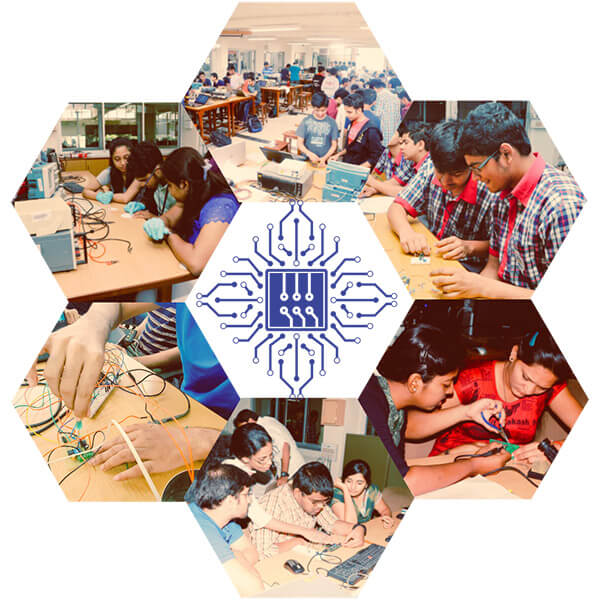
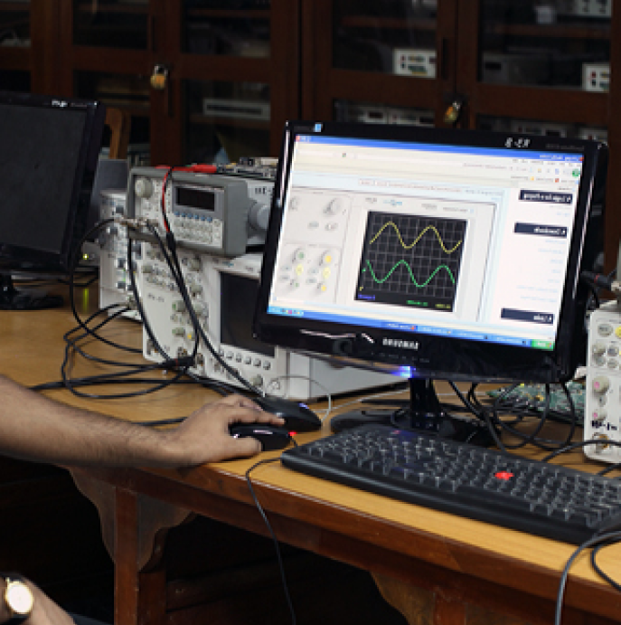
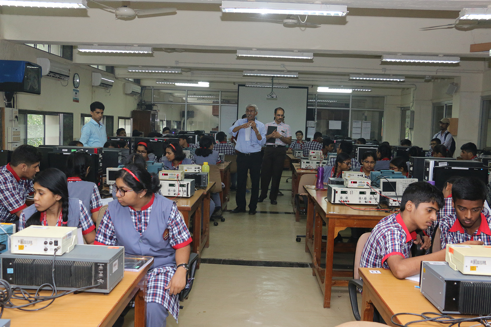
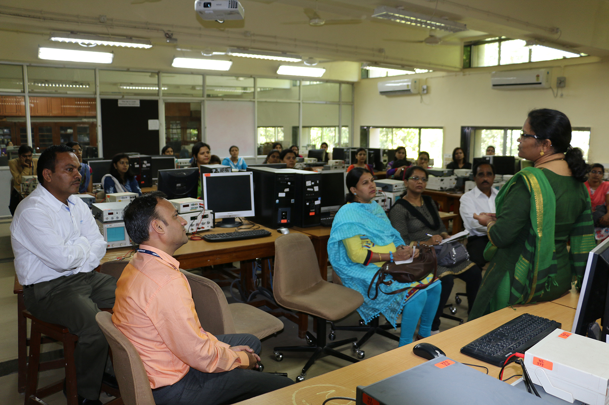
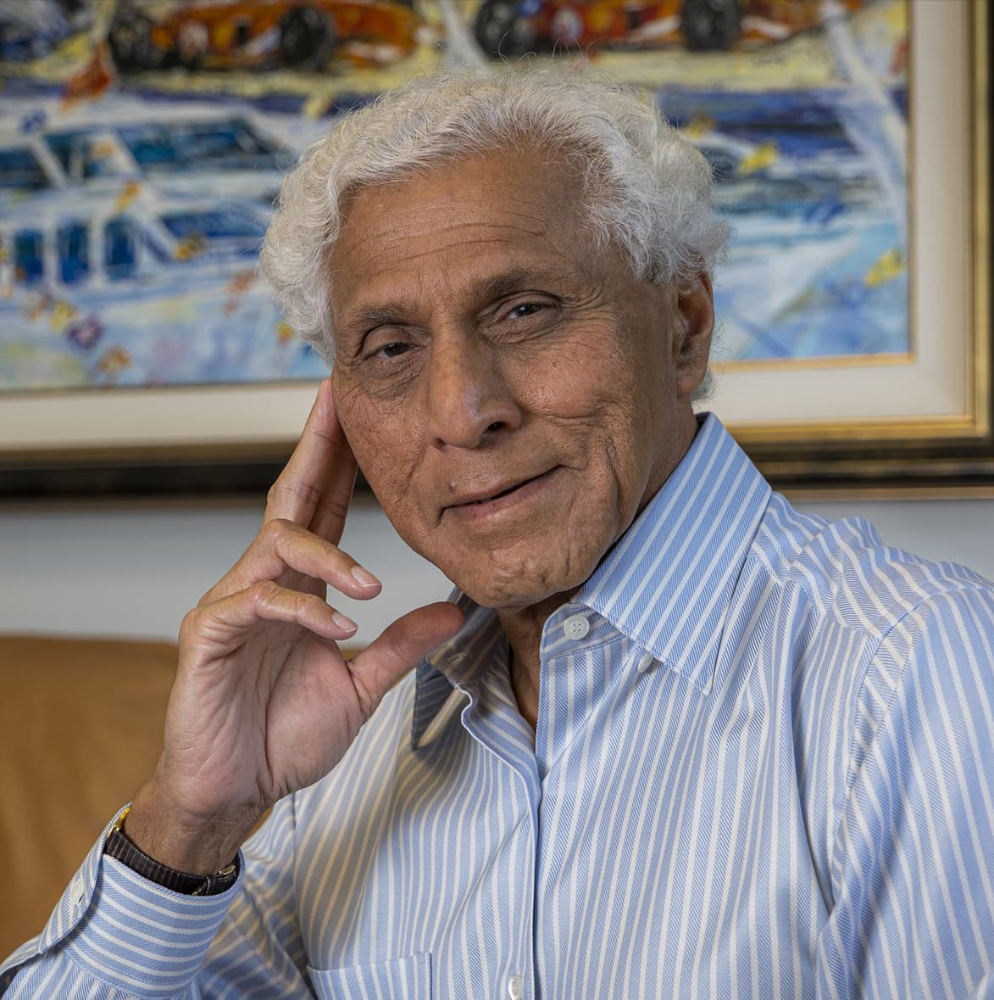
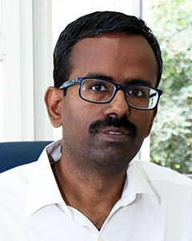
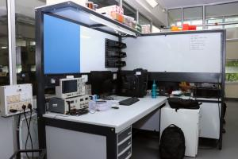
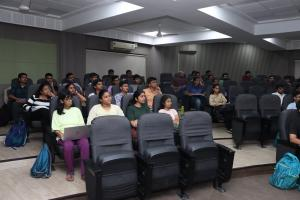
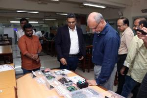
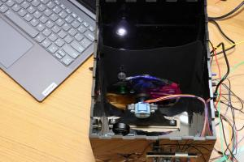

Where Electronics Lives.
The Wadhwani Electronics Laboratory is the hub of electronics activity in the Department of Electrical Engineering, IIT Bombay — teaching labs, in-house hardware, rapid prototyping and advanced measurement, all under one roof. Think it. Make it. Prove it.
Quick access
What do you need today?
The lab serves students, research groups and faculty across the institute. Start here.
Teaching Labs
Autumn and Spring semester lab courses, schedules and the hardware each course uses.
Advanced Facilities
Thermal and climate chambers, 3D printers, laser cutter, milling, coil winding, ESD benches.
Made in WEL Boards
PicoIRIS, PT-51, Xen-10, the IQ Modulator and QMagPi — designed and built in-house.
Instruments
Signal generators, oscilloscopes, analyzers, meters and high-voltage equipment.
WEL Inventory
Search component stock, add to a cart and raise a request as a project team.
Online Requests
Special facilities, development boards and modules, and equipment loans.

About WEL
One roof for the entire electronics activity in EE
Wadhwani Electronics Laboratory was inaugurated on 12 February 2001 in the Department of Electrical Engineering, IIT Bombay, supported through an endowment from our distinguished alumnus Dr. Romesh Wadhwani (EE 1969).
Many of the activities WEL runs today had not been possible earlier — at least not at the same scale — because of infrastructural limits, or simply because the various electronics activities were physically apart. WEL brought almost the entire electronics activity in EE under one umbrella, and the enthusiasm among students followed.
More than 1,700 students use WEL every year for laboratory courses and projects, on a large variety of microcontroller boards, CPLD/FPGA boards, logic analyzers, oscilloscopes, function generators and programmers — much of it designed in-house.
Read more about the lab
Our resources
Facilities built up over two decades
WEL has evolved from a lab that only ran curricular courses in 2001 into a hub for electronics activity, with state-of-the-art facilities for projects and product development.

Instructional Labs
5,000+ sq. ft. and roughly 100 identical AFG / DSO / supply / DMM setups.
See teaching labs
Experiential Learning Lab
Rapid prototyping equipment for hands-on learning and a spirit of making.
Explore the ELL
Advanced Measurements
Thermal and environmental chambers, EMI/EMC pre-compliance, biosensing.
See facilities
Made in WEL
Hardware designed, built and used here
Notable development boards produced in the lab and used across IIT Bombay and beyond.
Programs
More than curricular lab courses
Workshops, MOOCs, internships and student projects all run out of WEL.

Workshops & outreach
The WEL brand has reached 400+ colleges across India, training more than 2,000 teachers and students on hardware and lab content developed here.
See all workshops
Lab courses
10+ lab courses serving 1,700+ students a year, with tutorials, resources and manuals written by WEL staff and research assistants.
See courses
Internships & projects
Interns contribute to hardware development, research assistance and software modules — and use that training as a launchpad.
Read more20+Research papers
32+Projects
38+Workshops
12+Courses

Our founder
Dr. Romesh Wadhwani
Dr. Romesh Wadhwani (EE 1969) is a proven, successful entrepreneur and CEO. He built Symphony Technology Group from a startup to $2.5B revenue and $10B enterprise value, and has committed $1B of his own capital to build SymphonyAI.
He established the Wadhwani Foundation for economic development in emerging economies, with an initial focus on India. Its initiatives include the National Entrepreneurship Network, which runs growth-centric entrepreneurship programs at over 500 universities and colleges, and a research initiative in biosciences and biotechnology to create jobs through innovation.
Read his profile
Our team
Academic excellence, hands-on expertise
Technical superintendents, system administrators, mechanics and project assistants manage everything from embedded systems and PCB design to equipment maintenance and logistics — alongside M.Tech research assistants who bring fresh perspectives across domains.

Prof. Rajbabu Velmurugan
Lab In-chargeMahesh A. Bhaganagare
Technical Officer
Maheshwar Mangat
Sr. Technical SuperintendentAmit Shetye
Sr. Technical Superintendent
Gallery
Life at the lab
Lab sessions, EDL projects, NPTEL workshops, guest visits and the facilities themselves.




Get started
Need a board, an instrument or a facility?
Requests for development boards, equipment loans and special facilities are handled online. Component stock is searchable through the WEL Inventory portal.